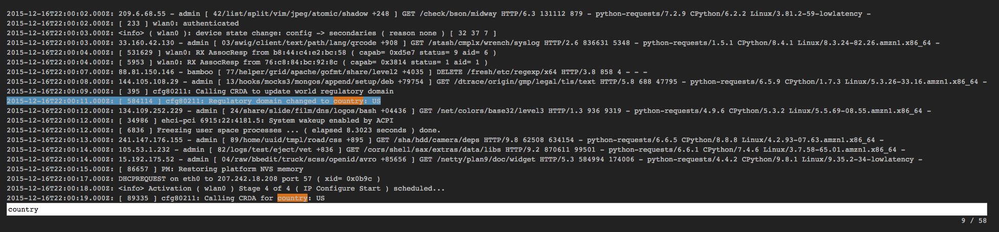

less
View the time and message field values of points. You can search and navigate as you would with the UNIX less command.

view less -title string
| Parameter | Description | Required? |
|---|---|---|
-title |
The title for the user-visible output, if it has one; the value may be any valid Juttle expression that produces a string | No; defaults to the name field that is present in all metrics points |
It supports these keyboard shortcuts:
| Key | Action |
|---|---|
| g | Go to the beginning of the output |
| G | Go to the end of the output |
| space | Page down |
| b | Page up |
| / | Search forward |
| ? | Search backward |
| n | Next match |
| p | Previous match |
| j (or down arrow) | Move down |
| k (or up arrow) | Move up |
Example
read stochastic -last :1 minute: -source 'logs'
| view less